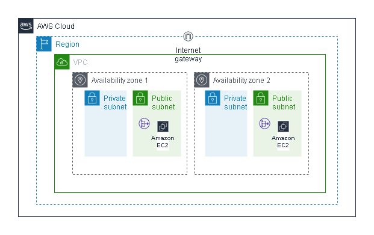

Below are some of the hands-on projects I have built while learning and practicing
Cloud and DevOps technologies.
Build Highly Available Infrastructure using Terraform
Designed and provisioned a highly available, scalable cloud infrastructure on AWS
using Terraform as Infrastructure as Code (IaC).
Tech Stack:
Terraform, AWS EC2, VPC, Subnets, Internet Gateway, Application Load Balancer,
Auto Scaling Group, Security Groups
Key Responsibilities:
- Created custom VPC with public subnets across multiple Availability Zones
- Provisioned EC2 instances using Launch Template
- Configured Application Load Balancer to distribute traffic
- Implemented Auto Scaling Group for high availability and fault tolerance
- Managed Security Groups and networking using Terraform modules
- Used Terraform state and variables for reusable infrastructure
Architecture Diagram

GitHub:
View Terraform Project